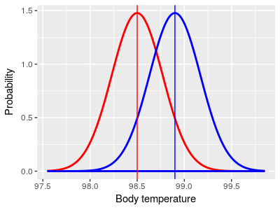
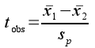

Introduction
In the last lesson you learned how to use a one-sample t-test to compare the mean of a sample of data to a specified hypothetical value of a population mean. The lesson used the question of whether drinking brandy changes body temperature as an example, because we consider 98.6° to be a known value for normal human body temperature. The specified value of 98.6° was taken to be the population parameter, and we symbolized it with a Greek lower-case mu (μ). The example experiment to test if brandy changes body temperature used a sample of people who were all given a shot of brandy, after which their body temperatures were measured. It should be clear that if the brandy had no effect on body temperature the mean body temperature for our sample of brandy drinkers, x̄, should be equal to the known, normal body temperature of 98.6°, but that if brandy affected the body temperature of the people in the experiment their mean body temperatures should be different from 98.6°.
As you learned, though, it's not as simple as that. Even if you sampled people who hadn't been drinking, each individual person in the sample will potentially have a body temperature that's a little different from each other, and also probably at least a little different from 98.6° just due to individual, random variability. The random individual differences would be reflected in the sample mean, which would probably be at least a little different from 98.6° as well. Because of this random sampling variation, finding that a sample mean is not exactly equal to 98.6° isn't enough evidence to conclude that drinking brandy affects body temperature.
Which left us with a problem to solve: if we don't expect our sample mean to be exactly equal to 98.6° how can we tell when the mean is different enough from 98.6° to indicate that drinking brandy has an actual effect?
Our solution to this problem was to use a null hypothesis significance test. This procedure allowed us to reach a conclusion about whether differences were so small that they could easily happen by random chance without any effect of brandy drinking, and differences that were large enough to conclude that drinking brandy had an effect on body temperature.
Before we move on to a new type of t-test, let's review the basic structure of statistical null hypothesis testing, and see how it was applied in the one-sample t-test you just learned:
|
Step in the procedure |
Applied to the one-sample t-test of body temperature of brandy drinkers |
|---|---|
|
Pose a scientific question of interest, and make a prediction that can be tested with an experiment |
Question: Does drinking brandy affect body temperature? Prediction: Body temperature will be higher than normal (98.6°) in people that drink brandy. |
|
State the statistical null hypothesis |
Brandy has no effect on body temperature, therefore body temperature for brandy drinkers is equal to the accepted value of 98.6° for normal human body temperature. Symbolically, Ho: μ = 98.6° |
|
Conduct an experiment that addresses the scientific question |
A sample of 20 people are given a shot of brandy, and their body temperatures are measured afterward. An average (98.7°) and a standard deviation (0.3°) are calculated for these 20 people. |
|
Test the null hypothesis (specifically, ask "what is the probability of obtaining the results we observed if the null hypothesis is correct?") |
Calculate a test statistic, tobs, which is the number of standard errors between the sample mean and the null hypothetical mean. tobs = (98.7-98.6)/(0.3/√20) = 0.1/0.067 = 1.49 Compare tobs of 1.49 against the t distribution to obtain a probability of tobs if the null hypothesis is true (this we called the p-value). The two-tailed p-value was 0.152 |
|
Use a decision rule to draw a scientific conclusion |
We use a threshold value (called the alpha level) of 0.05 to decide whether the p-value is small enough to reject the null hypothesis. Since the p-value was bigger than the alpha level of 0.05, we retained the null hypothesis. Since the null hypothesis is the hypothesis of no effect of brandy, we concluded that drinking brandy had no effect on body temperature. |
The calculations for a one-sample tests are relatively simple to do, but one-sample designs are rare in the biological sciences. A one-sample design involves comparing a mean of a sample of data against a known value for the population mean, μ - that is, when we specified Ho: μ = 98.6° we were stating that we know that normal body temperature for people who are not drinking brandy is exactly 98.6°. There are a couple of reasons why we are rarely able to specify the null value for a population mean in our experiments:
-
We often simply don't know what the population mean is for variables we are measuring. We are used to thinking of 98.6° as normal body temperature, but how many variables do we have that kind of information about? What about the normal salinity of the blood? Or the average mass of adult male lab mice? Or the average length of genes in the human genome? Most of the time we don't know what these values should be until we measure them, so we can't specify them in advance.
-
We may think we know the right number to use, but we may be wrong. A temperature of 98.6° is the conventional number for normal human body temperature, but the actual mean body temperature may be different than that. Normal body temperature may differ from person to person, and it definitely varies throughout the day and with changes in activity level. For the set of people in the study under the exact experimental conditions we used it's entirely possible that mean body temperature was not actually 98.6°. If we are using the wrong value for our null value then a one-sample test of the effect of brandy on body temperature will be flawed and unreliable.
To address these problems we can change our experimental design so that we collect data on a second group of subjects whose only purpose is to allow us to estimate what the normal, untreated condition should be. This type of experiment is a two-sample design.
Two-sample designs
Biological experiments usually use comparisons between two samples of data - that is, they use a two-sample design. A very common form of a two-sample biological experiment is the treatment group/control group design. Individual subjects are randomly assigned to either receive a dose of whatever is being tested, or to be left untreated as a baseline for comparison. The group that receives the treatment is called the treatment group, and the untreated comparison group is called the control group. If we are careful to make the control group just like the treatment group in every possible way except for the application of the treatment, then we know that any real difference between treatment and control groups can only be due to the effects of the treatment.
To change our test of effects of brandy on body temperature into a two-sample design we would randomly assign half of the people in the experiment to the brandy group (the treatment group for this experiment), and the other half would not drink brandy (the control group for this experiment) - if the brandy drinkers have a higher average temperature than the controls we would conclude that drinking brandy elevates body temperature. Why do you think it's important to randomly select which subjects are put in each group? Click here to see if you're right.
To summarize the differences between a one-sample and a two-sample
design:
|
One-sample designs use one sample of data, and compare the
sample mean (black) to a hypothetical population mean that we
specify (red, at 98.6°)
|
Two-sample designs compare sample means from two different
groups. Although any two groups could be compared, the most
common two-sample design is to compare the mean of a treatment
group (subjects that drink brandy, shown in blue) to the mean of
a control group (subjects that don't drink brandy, shown in
red).
|
|  |
Note that the red control group mean is not equal to 98.6° in the two-sample illustration on the right - it's possible to test if two groups come from populations with different means without knowing what the means are.
When we use a two-sample design we need to use a version of the t-test modified to compare two group means. The version of the t-test that is used for two groups is called the independent 2-sample t-test, or just the 2-sample t-test for short.
Example of a two-sample hypothesis
Now that you have the basic idea of what a two-sample design looks like, let's switch to a different example that is very much like an experiment you will do Biol 353 (Comparative Animal Physiology).
|
Animal nervous systems are made up of nerve cells (called neurons) that transmit electrochemical signals along the membranes of their long, skinny cell bodies. To get from the point of origin of the signal to the place where it is to be used most signals have to move across more than one neuron, but there are spaces between neurons, called synapses, that electrochemical signals cannot cross. The animated image on the right shows a synapse. At the start of the animation, an electrochemical signal arrives at the top (or presynaptic) neuron, which is shown as a wave of light. When the signal arrives it causes substances called neurotransmitters to be released from the presynaptic neuron, which are the small green balls in the illustration. These neurotransmitters diffuse across the synapse and bind with receptors located on the neuron receiving the signal on the other side of the synapse (the postsynaptic neuron). When the neurotransmitter binds this causes a new electrochemical signal to begin that continues down the postsynaptic neuron's membrane, as shown by the wave of white light traveling downward at the end of the animation. At least, this is how it works at the synapse between two neurons.
|
|
Neurons also are involved in controlling muscle, and to do this they form synapses with muscle cells called neuromuscular junctions (or NMJ's). The principle is the same for NMJ's as for synapses between neurons, but when a transmitter released by the neuron binds with receptors on the muscle cell it causes the muscle cell to contract. |
The question to be answered
There are a variety of neurotransmitters used in different kinds of neurons, but one neurotransmitter that is important in motor control, vision, and other brain functions is called "gamma-aminobutyric acid", or GABA for short. Hearts are muscular organs, and since GABA is important in motor control we might hypothesize that GABA has an effect on heart function.
Designing the experiment
If we wanted to study the effects of GABA on the heart rates of a large invertebrate, such as a lobster, how would we proceed?
Obviously, to see how GABA affects lobster hearts we would need to change the amount of GABA that lobster hearts are exposed to - we can do this by applying a saline solution with GABA dissolved in it to exposed lobster hearts. We would also need to define a response variable - number of beats per minute (BPM) is a good general measure of heart function, so we could count the number of beats in one minute for each lobster that we use.
| |
You can see in the video to the left that it's easy to expose the heart on a lobster and count the number of times per minute it beats. |
Think for a minute about the control group for this experiment. Applying a GABA solution to the treatment group lobsters not only adds GABA, it adds the saline solution that the GABA is dissolved into. Dumping saline directly on an exposed heart could potentially have an effect on the heart, whether GABA has an effect or not.
Given this, how should we handle the control group lobsters? If we added GABA solution to the treatment group but did not add anything at all to the control group would we be able to tell that GABA was the reason for any change in heart rate we observe? Click here to see if you're right.
It's also important to randomly assign the lobsters we use for the experiment to treatment and control groups, because we want the two groups to be random samples from the same population before any treatment is applied.
|
The data on the right represents results we might get from our experiment. You can see that the sample mean heart rate for the GABA group is lower than the heart rate for the control. |
|
Comparing the means - two-sample t-test
We now have some data that shows that heart rates are lower for lobsters with GABA applied than for lobsters with only saline applied. Since we randomly assigned lobsters to treatment groups, this difference in heart rate between the two groups can only be due to one of two possible explanations:
a) GABA affects heart rate, or
b) GABA doesn't do anything to heart rate, and the group means are only different due to random chance.
Why do we have to consider the possibility that a difference is due to chance? For the same reason as we had to consider it in the one-sample design - means of random samples drawn from a population will usually be at least a little different from the population mean, and we should also expect two different samples drawn from the same population to be at least a little different from one another as well.
You can see this in action in the graph to the left. The two sets of data are random samples from a population that has a mean that's in the middle between the observed GABA and Control group means, at 18.7 BPM. The sample means are shown as red crosses in the middle of each sample of data, and the difference between the means is shown below. Each time you hit the "Randomize" button you will see new samples selected, and a new difference is calculated.
If you hit "Randomize" several times, you'll see that the difference between the groups is very rarely equal to 0, even though both groups are sampled from the same distribution and (by definition) have the same mean at the population level. You should also see that even though the amount of difference between the means is rarely 0, it usually falls between about -2.5 and 2.5. Just like with a one-sample t-test, we should be able to characterize how much difference between group means usually occurs by chance, and we can use the distribution of random differences to tell us if the difference we observed in our experiment is unusually big compared to the differences we would expect to happen by chance.
We used a t-distribution as a model of the distribution of means drawn at random from a population when we did our one-sample t-test. We can also use the t-distribution as a mathematical model of sizes of differences between two sample means drawn from the same population, like those simulated in this graph, but we need to make a couple of modifications to our calculations.
- First, we need a new formula for the observed t-value
- Second, we need to adjust our degrees of freedom so that we use the correct t-distribution to obtain our p-value.
This modified version of the t-test is called a two-sample t-test.
The null hypothesis
The null hypothesis is represented by the interactive graph of random samples above - the null states that there is no difference between means at a population level, and any differences that we observe are just due to random chance. In null hypothesis notation we state that:
Ho: μGABA = μcontrol
or, equivalently, that:
Ho: μGABA - μcontrol = 0
This notation states that the population mean for the first sample (μGABA, the treatment group) is the same as the population mean for the second sample (μcontrol, the control group). The null hypothesis will only be true if GABA has no effect on heart rate - if the null is true the two groups are just random samples from the same population, and they thus have the same population mean.
The alternate hypothesis is denoted:
HA: μGABA ≠ μcontrol
or, equivalently, as:
Ha: μGABA - μcontrol ≠ 0
Just as you saw in the one-sample case, the alternate hypothesis for a two-sample null doesn't specify precisely what the difference between the means is supposed to be, it only states that the difference is not equal to the null value of zero. By the way, with this alternative hypothesis would we be calculating one-tailed or two-tailed tests? Click here to see if you're right.
Note that the two different versions of the null hypothesis are mathematically equivalent, but the version that states Ho: μGABA - μcontrol = 0 makes it clear that we are testing if the difference between the population means is 0.
The test statistic
To test the null hypothesis we need to compare the difference between our sample means to a statistical distribution to obtain a p-value, just like we did with a one-sample test. Remember, a tobs test statistic measures the amount of difference between two sample means, expressed as a number of standard errors apart. For a two-sample comparison, we can calculate the difference between the sample means for the numerator and divide by their pooled standard error to be our test statistic, tobs:

Look at the structure of this formula - it looks very similar to the one-sample t-statistic we used last time, except that instead of subtracting an observed sample mean from a hypothetical value, we are subtracting one observed sample mean from another. The difference between the two sample means is 21.3 - 16.1 = 5.2.
Note also that we only need to calculate the difference between the sample means to get tobs. This is a huge advantage over the one-sample t-test, because we do not have to know the value of either population mean in order to calculate the test statistic.
To convert this difference into standard error units we need to calculate the standard error of the difference between the two sample means, which is estimated by the pooled standard error, sp.
To obtain sp we first have to calculate the variance of the differences between means. If you remember from the beginning of class, we learned that a variance is calculated as:

where the numerator is the sum of the squared differences between data points and their mean (called the "sum of squares", or SS), and the denominator is the degrees of freedom, equal to the sample size minus 1 for a sample variance (df). When we are working with variances of differences between means, rather than variances of a sample of data, we calculate a pooled variance:
s2p is an estimate of variance in the data, combined (or pooled) between the two different groups we are comparing. The pooled variance is essentially an average of the two group variances, but if there are different numbers of observations in one group than the other it will be weighted more heavily by the group with the most data.
Once you have this pooled variance, the pooled standard error is simply:
So, the observed t-value is the difference between the means divided by the pooled standard error, which means observed t gives us the number of standard errors between the group means.
Variances and sample sizes are reported in the table of summary statistics above, from which we can calculate the pooled variance:
The pooled standard error is:
The observed t-value is the difference between group means (5.2 bpm) divided by the pooled standard error:
The observed t-value tells us that there are 4.3 standard errors between the GABA and control group means.
Obtaining a p-value
Four standard errors should strike you as a pretty big number (remember that with a large sample size we would reject if the difference was about 2 standard errors), but we need to confirm this impression by calculating a probability for the t-value. We do this by comparing the tobs to the t-distribution that has the correct degrees of freedom.
With a two-sample t-test we have to estimate two different sample means, and we lose one df for each, so the df for a two-sample t-test is:
df = nGABA + nControl - 2 = 18
|
The t-distribution we use for a two-sample t-test is no different than the one that we used for a one-sample t-test - the x-axis is in t units, so we can place our tobs value of 4.3 on the x-axis (at the vertical green line) and use the area under the curve from 4.3 to positive infinity as our p-value. This would give us p = 0.000215. If we are only looking at values above the observed t-value we are only looking at one tail of the curve, so this is a one-tailed p-value. Since we were asking whether GABA has any effect on heart rate, and didn't specify in advance that we were only interested in an increase, or only interested in a decrease, we also want to consider changes as big as we saw but in the opposite direction. Remember, under the null hypothesis all differences are due just to random chance, and the p-value is telling us the probability of obtaining a random difference as big as we obtained by random chance. Random differences as big as 4.3 standard errors would happen either if the control mean was bigger than the GABA mean (as we observed), or if the GABA mean was bigger than the control mean - the only change is that the difference would be negative instead of positive. So, if we don't specify a direction of change that we are testing for, we need to consider both positive and negative differences as big as we observed. To do this, we also use a vertical line at -4.3, and add the area under the curve from -4.3 to negative infinity to our p-value. Since the t-distribution is symmetrical the area under the curve from -4.3 to negative infinity is the same size as the area from 4.3 to positive infinity, p = 0.000215, so the probability of a difference of 4.3 units occurring by random chance is p = 0.000215 + 0.000215 = 0.00043. This is a two-tailed p-value (be sure you understand the difference between a one and two sample test, and a one and two tailed p-value). |
This two-tailed p-value is well under our usual α-level of 0.05, and we would reject the null hypothesis of no difference between the means in favor of the alternate. With the null rejected, we can treat the difference in means we saw as likely to be real, rather than due to random chance.
Draw a conclusion
Finally, to reach a conclusion about the effect of GABA on lobster heart rate we just need to see how the null and alternative hypotheses match up with our possible scientific conclusions. We can specify the following decision rules:
| Statistical test result | Comparison of group means | Scientific conclusion |
|---|---|---|
| Null is rejected in favor of alternative | GABA > control | GABA increases heart rate |
| Null is rejected in favor of alternative | GABA < control | GABA reduces heart rate |
| Null is retained | Doesn't matter, the result indicates they are the same at the population level | GABA has no effect on heart rate |
Based on these decision rules, what should we conclude? Click here to see if you're right.
Power of two-sample t-tests
Remember, statistical power is the probability of rejecting a false null hypothesis - in other words, of detecting an actual effect of GABA on heart rate. We want to reach the correct conclusion in our analysis, so high power is a good thing. We reject the null when our tobs is big enough, so to increase power we need to increase tobs. Recall that the formula for tobs is:
From this you can see that tobs gets bigger when either the difference between the means increases, or the pooled standard error decreases.
tobs = 4.29, p = 0.00043
Difference between the means
xControl - xGABA =
Standard error, determined by:
Standard deviation =
n per group =
This graph allows you to change the amount of difference there is between the groups, and to change the standard error by changing the amount of variability in BP among lobsters (the standard deviation), or the number of lobsters used in each group.
Initially, all of the settings are at the values reported as the actual experimental results. Since differences become significant as the observed t-value increases, you can explore how changing the difference between groups, or changing the standard error through changes in standard deviation or sample size, alter the observed t-value and associated p-value.
When a combination of difference, standard deviation, and sample size you select results in a statistically significant difference the observed t-value is red. When the t-value is too small to be significant it is black.
The shaded regions for each group are 95% confidence intervals around the means. As you manipulate the settings you'll see that the confidence intervals can overlap to an extent and still have a p < 0.05 - this is one of the reasons for doing a two-sample t-test, as it's possible to detect smaller differences than would be apparent if we required confidence intervals for to not overlap between groups.
Increasing the difference between means
In an experiment, you can change the amount of difference between groups up to a point by changing the treatment level - for example, you could use a more concentrated GABA solution to produce a bigger change in heart rate. This is only practical up to the point that you overdose the animal - in the graph applet you are free to make the difference between the groups as big as you want, but in reality if you used too much GABA you would stop the lobster's heart.
Reducing the standard error
Remember that the standard error is standard deviation divided by the square root of the sample size, s/√n, so you can make the standard error smaller by either reducing the standard deviation or by increasing the sample size.
Reducing the standard deviation
The standard deviation is primarily a reflection of the amount of biological variability in heart rate in the animals, so there is a limit our how much control you have over it. However, there are some approaches you can take to minimizing the standard deviation:
- You can minimize the variability among individuals by using subjects that are similar to one another - for example, you would want to only use lobsters that are healthy, are about the same size, and perhaps you might want to choose to only use a single sex.
- You can standardize the conditions under which you are making the measurements - for example, the temperature should always be the same, as well as the light level, and any other environmental conditions that you are capable of controlling.
- You can avoid adding variability by being careful in your measurements - all observers should be counting BPM in the same way (don't have some counting for 15 seconds and then multiplying by four while others count for the full minute, for example).
You can see the positive effect of making conditions as consistent as possible by first setting the difference between means to a small number, like 1, and then reducing the standard deviation until the test becomes significant - you'll see the distributions around the means get narrower to the point that even this small difference of 1 BPM can be statistically significant if the amount of variation in the measurements is small.
Increasing the sample size
What you have the most control over in an experiment is sample size. The benefits of increasing sample size are huge when you start from a very small initial sample size, but have less effect if you start from a very large sample size. For example, if you begin with a sample size of 2 lobsters per group adding two more to increase the sample size to 4 per group will be extremely helpful, but going from 1000 in each group to 1002 in each group helps much less.
Increasing sample size has the same beneficial effect that reducing the standard deviation has - with a large enough sample size you can detect very small differences between group means. You can see this by setting the difference between groups to 1 again and setting the standard deviation to its observed value of 2.7, and then increasing the sample size until the difference becomes significant. You'll see that you can detect a very small effect of GABA on heart rate if your sample size is large enough, even if you can't reduce the random variation in the data.
Another important aspect of choosing sample sizes: the smallest pooled
standard errors for a given sample size happen when the number of data
points in each group is the same. An experimental design with an equal
number of data values in each group is called balanced.
Since pooled standard errors are smallest when the design is balanced It
is generally true that balanced designs have the highest statistical
power in a two-sample t-test.
Homogeneity of variances
One-sample t-tests had two general assumptions (random sampling, independence of data points) and one that was specific to one-sample t-testing (normally distributed data). Two-sample t-tests have the same set of four, plus one more: the variances are assumed to be equal between the two groups. This is called the homogeneity of variances assumption (HOV).
The null hypothesis is stated in terms of the population means being the same for the two groups, Ho: μGABA = μcontrol, but for the t-distribution to be an accurate model of differences between means we also need for the variances to be the same as well.
To give you an idea of why this is important, when we sample from two distributions, one with a much larger variance than the other, our sample means from one group will also be more variable and we will more frequently see large differences between sample means than if the variances were the same.
| As an example, consider two distributions with the same mean of 20 BPM and with the same variance. Since mean and variance together define a bell-shaped curve, the two distributions are identical. If the red curve is the GABA group and the black curve is the control group, this illustrates a case in which the null hypothesis is true, because both population means are at the same place. If we did an experiment and got one sample of lobsters from the red curve and another from the black curve and ran a two-sample t-test on the two means, we could either retain the null if the p-value was greater than our alpha level of 0.05 (correctly, since the null is true in this case) or reject the null if the p-value is less than 0.05. Rejecting the null would be a mistake (a Type I error), and since our alpha level is 0.05 we would expect to make this mistake in 5% of the experiments we ran. |
|
This graph also shows two distributions with the same mean at 20 BPM. This graph also illustrates a case in which the null hypothesis is true, because the means are identical, but now the two groups have different variances, with the red (GABA) group having a bigger variance than the black (control) group. Since the means are the same, and the null hypothesis is true, we would like to still only have a 5% chance of rejecting the null. However, thanks to the differences in variance we will tend to get means for the control group that fall between 19 and 21, but will get means that are more variable from the GABA group, between 16 and 24. This greater variability in the GABA group would result in a larger number of big differences between sample means than we would get if both distributions had the same variance. |
|
Why do we care? The green curve in the graph to the left shows the t-distribution that we would use in a two-sample t-test for two groups of 10. The distribution is based on the assumption that the variances are the same for the two groups, and the area under the curve gives us accurate p-values when this is true. However, thanks to the difference in variance it's actually the blue curve that represents the distribution of differences between the means we would get by chance with two groups of 10. You can see that the tails of the blue curve are taller than the green curve thanks to the larger number of big differences we would get, and the middle of the distribution is shorter thanks to the smaller number of little differences we would get from this pair of distributions. If we were conducting an experiment that gave us a distribution of random chance differences that look like the blue curve, but used the green curve to get our p-values, we would end up rejecting the null hypothesis too often - our Type I error rate would be higher than the 5% that we expect from our alpha level of 0.05. |
How do we deal with this problem? First, we test whether the variances are different at the population level, and then we adjust our t-test for differences in variance if we find that we need to.
Testing the HOV assumption
Although we call HOV an assumption we don't just take HOV as a given. Before we run a t-test, we can first test whether the variances are statistically significantly different between the groups.
HOV can be tested using the F-test. F tests use the ratio of two variances as their test statistic - the ratio of two variances is thus called the F statistic, or equivalently the F ratio. F ratios for pairs of samples drawn from the same population follow an F-distribution, just like the t-statistic follows the t-distribution. An interactive graph of an F-distribution is shown below.
Numerator df: Denominator df:
Critical F = 3.179
The shape of the F distribution is not like a t-distribution - it is asymmetrical, and because it is a ratio of two variances that both have to be positive numbers the F distribution doesn't go below zero. Both variances used to calculate the F ratio have sample sizes, which means that there are two different degrees of freedom values, one for the variance in the numerator and one for the variance in the denominator of F. Each d.f. is equal to sample size - 1. Our lobster example uses 10 lobsters in each group, so each variance has 10-1 = 9 degrees of freedom, and the graph is initially set to numerator and denominator degrees of freedom of 9, 9 to match our lobster example.
The critical F reported below the df settings is the lower end of the red-shaded area under the curve. The red area is the rejection region, and the critical F value is the point at which we begin to consider the variances different - if the numerator variance is more than 3.179 times as large as the denominator variance we would consider the variances to be statistically significantly different. Remember, rejection regions are determined by setting an alpha level (to 0.05 usually), and then finding the x-axis value that defines an area under the curve that matches the alpha level - thus, there is an area below the curve of 0.05 from F = 3.179 to infinity.
You can change each of the degrees of freedom and see how the shape of the curve changes, and if you watch the critical F value you can see how this shape change affects the size of difference in variances we can detect. Try setting the numerator df to 1 - you will see that the curve is asymptotic along the y-axis when numerator df is 1, rather than going through the origin at 0,0.
We have a total of 20 lobsters - when we use an equal number of lobsters in each group we reject the null if the numerator variance is 3.179 times larger than the denominator or more. If you set the numerator df to 10 and the denominator to 8, you will see that the critical F goes up to 3.347 - the F-distribution depends on the numerator and denominator df individually, and you don't get the same result with the same total sample size if you divide the samples into groups unequally.
The null hypothesis for an HOV test
Just like with the other null hypotheses we've encountered, the null hypothesis for an HOV test is that there is no difference between the groups at the population level. Since we are testing for differences in variances instead of differences in means, the symbolic representation of the null hypothesis is:
Ho: σ21 = σ22
and the alternate hypothesis is:
HA: σ21 ≠ σ22
Note that the HOV assumption is that the variances are the same between the groups, which is what the null hypothesis states. The decision rule for this test would therefore be that we conclude we meet the HOV assumption if we retain the null, and conclude we do not meet the HOV assumption if we reject the null.
Conducting the F test for HOV
For the lobster data, we had one standard deviation of 2.74 (for the control group) and one of 2.66 (for GABA). The ratio of variances is thus:
F = (2.742)/(2.662) = 1.06
Note that we put the larger variance into the numerator. This was not accidental - if we are careful to always put the larger variance in the numerator we will force the F-ratio to be greater than 1, and we only have to look at random ratios of variances that are bigger than 1. That is, we can use a one-tailed F-test, that uses the upper tail of the curve (MINITAB doesn't follow this convention - it decides numerator and denominator alphabetically based on the names of the groups, and does two-tailed F tests by default). The p-value that would be obtained by finding the area under the F-distribution from 1.06 to positive infinity is p = 0.465.
Which means...what? Do we have HOV or not? Click here to see if you're right.
But what of the illustration above of the red and black curves with very different variances? For that example, the standard deviation for the black (control) curve is 0.5, and for the red (GABA) curve is 2. This gives us:
F = (22)/(0.52) = 16
With the same numerator and denominator degrees of freedom of 9 and 9
as before we now have an area under the green curve from 16 and above of
p = 0.000162. We would reject the null, and find that we do not have
equal variances between the two groups.
To sum up, when conducting an HOV test the decision rules are:
| With a p-value that is: | The null hypothesis (Ho:) should be: | We should then conclude that: |
|---|---|---|
| p < 0.05 | Rejected | We "fail" the HOV test - no HOV assumed for the t-test |
| p > 0.05 | Retained | We "pass" the HOV test - assume HOV for the t-test |
What it means to fail HOV
First, bear in mind that the HOV test is not a test of the scientific hypothesis - we are not testing if applying GABA to lobster hearts changes their heart rates. The HOV test is purely a check of whether we are able to use the t-test without having to account for differences in variance between the groups.
If you do fail to meet HOV, all is not lost - there is a version of the two-sample t-test, called Welch's t-test, that is used for samples with different variances.
Welch's t-test uses the same formula for tobs that we used above, and compares it to the same t-distribution we learned above as well. But, it corrects for the larger number of large differences expected by using a t-distribution with a smaller degrees of freedom. Remember that t-distributions are wider at smaller degrees of freedom, and thus require a larger number of standard errors between means to reject the null. By reducing the degrees of freedom the Welch's t-test accommodates the increased number of large differences we would expect by chance when the variances are different, and gives accurate p-values. In MINITAB, when you run a two-sample t-test, you have the option of checking a box to indicate you are assuming HOV between the groups.
|
If you check the box to assume HOV the output looks like this - the degrees of freedom is equal to the total sample size minus 2 (18 in this example), and the pooled standard deviation used for the t-value is reported. |
|
|
If you don't check the box the output changes to this - the
degrees if freedom has been reduced in proportion to the
difference in variance between the groups, and no pooled
standard deviation is reported. |
Because the t-test results change depending on whether you assume HOV or not, it is particularly important to do a test of HOV before conducting the t-test.
Other types of two-sample designs
Experiments with a treatment and a control group are very common in biology, but there are many other cases in which two means might need to be compared. A few examples:
- Comparison of plant growth using two different types of fertilizer. Both fertilizer types would be a "treatment", and neither would be considered an un-treated control. If you don't use a control you won't know how well the plants grow when no fertilizer is used, but this is sufficiently well understood that a scientist may choose to forego using a control and focus on differences between the two different treatments.
- Comparison of algae growth at two different temperatures. In cases like this there is no temperature that could be considered an un-treated control, but a comparison of growth at two different temperatures is still useful.
- Comparison of rate of drug elimination time between male and female patients. Again, neither sex is a control for the other, but a comparison between the sexes may be important.
The mathematics of the two-sample t-test are the same regardless of how the two groups are defined, and any two groups of numerical data can be compared.
Paired designs
|
Another way to approach the GABA experiment is to use a single set of lobsters but measure them twice - first, their heart rates could be measured before applying GABA, and then their heart rates could be measured after applying GABA. Measurements before treatment serve the same purpose as the control group - they tell us what the heart rate looks like in lobsters that haven't (yet) received the treatment. This is an example of a paired design. In a paired design we still have two sets of measurements, but there is a logical pairing of each measurement in one group with a measurement in the other group. In this example the pairing is by individual, with a Before measurement for each individual logically paired with the After measurement for the same individual. The data table to the left represents an example of this design with 12 lobsters - each row is a different animal. As we saw in the first example there is a lower heart rate after GABA treatment, which appears to be showing us that applying GABA reduces heart rate. Notice though that there is only a small amount of difference between the means (3 BPM different) compared with the amount of variation between individual animals (low of 6 and high of 38.7 for the Before data, and a low of 6 and a high of 28.8 for the After data). Small differences in a noisy data set are often not statistically significant. |
|
If we plot the data we have what looks like a two-group data set. If we analyze the data with a two-sample t-test we would see that: sp = 3.22 d.f. = 24 - 2 = 22 t = 3/3.22 = 0.91 p = 0.37 |
The p-value is > 0.05, which means we should retain the null, and we would conclude that GABA has no effect on lobster heart rate.
Paired designs require paired analysis - the paired t-test
|
However, there is a problem with the way we analyzed the data. A two-sample t-test assumes that the data in one group is independent of the data in the other group. One way to think of what it means for data points to be independent is that knowing one data value doesn't give you information about other data values. But, we know that for every Before measurement there is an After measurement of the same animal. We would expect that a lobster with a fast heart rate compared with the others before treatment would have a fast heart rate compared with the others after treatment as well - you can see the pairs of measurements connected by lines in the graph to the left, and there is a definite tendency for the Before measurements to be about the same as the After measurements due to individual variation. This individual variation among lobsters is not only making the data variable, it is responsible for a lack of independence between the groups that violates an assumption of a two-sample t-test. |
|
An approach to solving this problem is to subtract the After measurements from the Before measurements for each animal, so that we end up with a single difference for each one. You can see this calculation in the data table below (names were added to each row to emphasize that rows are measurements of the same lobster). Focusing on the differences reveals something important: there is a fairly consistent effect of GABA on heart rate for each lobster, regardless of the Before heart rate. You can see that most of the differences are positive, indicating that the After heart rates tend to be less than the Before heart rates. If we just use the differences in the Diff column as data, the fact that each lobster has a different Before heart rate is no longer important, and only the (fairly) consistent decrease in heart rate after GABA treatment is used in the analysis. |
Analyzing the differences instead of the raw Before and After data does two good things for us:
- The data becomes less variable because the individual variation is differenced away. Less variability means smaller standard errors, and better power to detect the effect of GABA.
- We fix the lack of independence between the measurements. The problem we had was that our 24 measurements were actually pairs of measurements from 12 individuals that were not independent. Now we just one differences for each of the 12 individuals, and as long as the individual lobsters are independent (which they should be) our lack of independence problem is solved.
The version of the t-test that is appropriate for a paired design like this one is called a paired t-test. Operationally, the paired t-test is a one-sample t-test that uses the differences between pairs of points as the data set. Just like with a one-sample design, we will compare the average of the differences to a value of 0 (we choose 0 because that's the average difference we expect if GABA has no effect on heart rate). Like the one-sample t-test, we have to assume normal distributions for the differences, but since we only have one set of differences we only use one variance, and don't have to assume HOV.
The calculations for this analysis are:
Mean of differences = 3 (note that this is the same as the difference between means)
Standard deviation of differences, s = 4.49
Standard error of differences, sd = 4.49/√12 = 1.30
d.f. = 12 - 1 = 11
t = (3 - 0)/1.30 = 2.31
p = 0.04
Now the result is statistically significant, indicating that GABA decreases heart rate. Why did we miss this the first time, when we used a two-sample t-test?
Since the mean of the differences is the same as the difference between the means, we only did better using a paired t-test because the standard error of the differences is smaller. The standard error the differences used for the paired t-test was only 1.3, but the pooled standard error used for the two-sample t-test was 3.22.
Assumptions of a paired t-test
Even though paired designs involve measuring two sets of numbers, we end up using just a single set of differences. A paired t-test is essentially a one-sample t-test, so it has the same assumptions of a one-sample t-test: subjects are sampled at random, the differences are independent, and the differences are normally distributed. Normal distribution of the measurements isn't important, only the distribution of the differences is relevant.
Also, note that there is no HOV assumption with a paired t-test - with a single set of differences there is only a single variance used in the test.
Problems with paired designs
First, you should know that paired designs are not always appropriate. This example uses lobsters that have had their hearts exposed, and it's possible that the heart rate could slow down between the Before and After measurements just due to the animal's condition deteriorating. Paired designs are often use before/after measurements, which makes it possible for changes over time to look like treatment effects.
It is possible to pair in other ways, though. If you were measuring the effects of sunscreen on skin tanning you might apply sunscreen to one arm and leave the other untreated on multiple subjects - the pairing would be by individual, but not in a before/after way. If you were interested in measuring the effects of cities on levels of pollutants in streams you may measure upstream from cities and downstream on the same set of streams, such that the pairing is by stream.
|
Second, you should also be aware that paired designs are not always more statistically powerful than two-sample designs. Notice that when we used a paired design we had 12 differences, which gave us 12-1 = 11 degrees of freedom, whereas when we used a two-sample design we had 24-2 = 22 degrees of freedom. The power of a t-test increases as the degrees of freedom goes up, both because the standard errors go down and because the t-distribution itself becomes more narrow. In this example of lobster heart rates there was so much individual variation in the data that we came out ahead by using differences to test for the effect of GABA, even though it meant cutting our degrees of freedom in half. However, in other cases there may not be such a strong individual relationship between the Before and After measurements, and you could end up with lower statistical power using a paired design. The graph to the left shows a scatter plot of the Before and After measurements, and you can see there is a strong positive relationship between them - the points tend to follow a straight line from lower left to upper right on the plot. When this is true, a paired design can increase power. But, when it isn't the case there is no benefit of pairing, and doing so reduces degrees of freedom, and thus reduces statistical power. |
The take-home message is: it is important to match the analysis you use to the design of your experiment. When measurements from one group are not logically paired with measurements in the other, use a 2-sample t-test. When you have logical pairing between observations in the two groups, use a paired-samples t-test.
Next activity
We will work with examples of two-group data sets, including tests of HOV. We will compare the height/stride ratios for men and women in class, using the data we collected in the last activity, and will compare our arm lengths and bicep circumferences between our right and left arms.